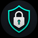

BROray-Light
VLESS для Keenetic
Вход
Используйте логин и пароль интерфейса Keenetic.
Пароль не сохраняется BROray-Light и проверяется KeeneticOS.

Используйте логин и пароль интерфейса Keenetic.
Пароль не сохраняется BROray-Light и проверяется KeeneticOS.